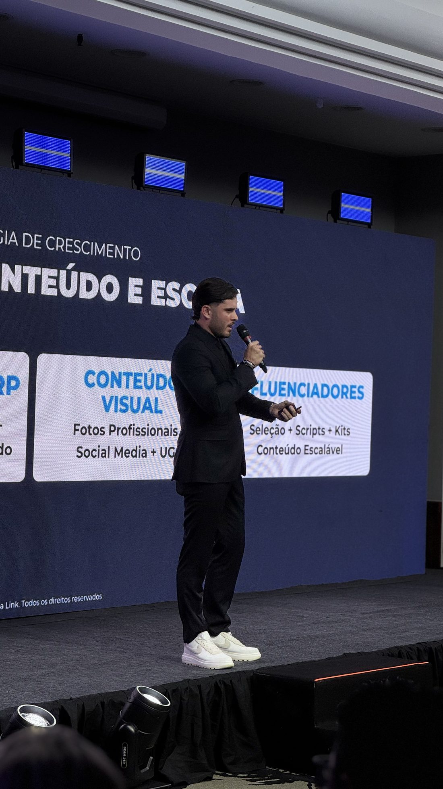

Oferta irresistível: como montar a oferta que faz o tráfego pago vender
A maioria das empresas acha que o anúncio é que vende. Não é. É a oferta. Aqui eu mostro como montar uma oferta tão boa que dizer não parece burrice — e por que ela derruba o seu custo de aquisição.

Uma oferta irresistível é a combinação de produto, preço, bônus, garantia e urgência apresentada de um jeito em que o valor percebido fica tão maior que o preço que dizer não parece burrice. A oferta não é o produto — é o pacote completo que o cliente recebe ao comprar. E é ela, não o criativo, que decide se o seu tráfego pago vende. Anúncio ruim com oferta forte ainda vende; anúncio lindo com oferta fraca queima verba.
Eu rodo tráfego há anos e vejo o mesmo erro toda semana: a empresa gasta fortuna em criativo e verba, e esquece de olhar para a única coisa que o cliente de fato avalia no fim — o que ele recebe pelo que paga. Vou direto ao ponto: o que é uma oferta, por que ela manda mais que o anúncio, e os 6 elementos para montar a sua.
- A oferta é o pacote, não o produto: preço, bônus, garantia, prazo e motivo para agir agora.
- Oferta forte sobe a conversão e, com isso, derruba o custo de aquisição — na mesma verba.
- Desconto não é oferta: ele queima margem. Oferta boa aumenta o valor percebido.
- Antes de trocar criativo ou subir verba, conserte a oferta.
Qual a diferença entre produto e oferta?
O produto é o que você entrega. A oferta é como você empacota esse produto para a venda. O mesmo tênis pode ter uma oferta fraca — “tênis R$ 299, frete à parte” — e uma oferta forte — “tênis R$ 299 com frete grátis, troca em 30 dias sem perguntas, e um par de meias de brinde se comprar hoje”. O item é idêntico. A decisão de compra, não.
Quando alguém clica no seu anúncio, existe uma pessoa do outro lado fazendo uma conta mental: “o que eu ganho vale mais do que o que eu pago?”. Se a resposta é um “sim” óbvio, ela compra. Se é um “talvez”, ela fecha a aba. O seu trabalho — e o da assessoria — é empilhar valor até o “sim” ficar óbvio.
Por que a oferta vende mais que o anúncio
O criativo tem uma função: fazer a pessoa parar e clicar. Importante, mas é só a porta. Depois do clique, quem decide a venda é a oferta e a landing page que apresenta essa oferta. Dá para ter o melhor criativo de alta estética do mercado e não vender nada, porque o que chega na página é fraco, confuso ou caro demais para o valor percebido.
E tem um efeito direto no bolso: oferta forte converte mais com a mesma verba. Mais conversão pelo mesmo investimento significa custo de aquisição menor. É por isso que eu olho a oferta antes de mexer em qualquer outra coisa. Trocar criativo custa produção; subir verba custa dinheiro; apertar a oferta muitas vezes custa só coragem de pensar melhor o pacote.
Antes de perguntar “por que meu anúncio não vende”, pergunte “eu compraria a minha própria oferta?”. Na maioria das vezes, o problema nunca esteve no anúncio.
Os 6 elementos de uma oferta irresistível
Não existe fórmula mágica, mas existe uma estrutura. Toda oferta que vende bem mexe nestes seis pontos:
- Produto e promessa clara: o que é, para quem é e qual resultado entrega. Promessa vaga não vende. “Emagreça” é fraco; “um cardápio de 21 dias pronto para quem não tem tempo de cozinhar” é concreto.
- Preço e forma de pagamento: o preço precisa fazer sentido diante do valor percebido — e o parcelamento, o Pix e a clareza de custo total importam tanto quanto o número. Preço escondido mata venda.
- Bônus de alto valor percebido: algo extra que custa pouco para você entregar, mas vale muito para o cliente (um guia, um brinde, um atendimento premium, um acessório). Bônus aumenta o valor sem mexer no preço do produto.
- Redução de risco (garantia): quem tira o medo de errar, vende mais. Troca fácil, garantia de 30 dias, “satisfação ou dinheiro de volta”. O risco sai do cliente e vai para você — e é isso que destrava a compra.
- Urgência ou escassez real: um motivo honesto para comprar agora — lote, estoque limitado, condição que expira. Tem que ser verdade; urgência fake o cliente fareja e você perde confiança.
- Prova: depoimento, avaliação, número de clientes, antes e depois. A prova sustenta a promessa. Sem ela, tudo soa bom demais para ser verdade.
Você não precisa dos seis no talo em toda campanha. Mas quanto mais fracos eles estiverem, mais caro vai ficar o seu tráfego para compensar.
O erro do desconto como “oferta”
Quando as vendas travam, o reflexo da maioria é cortar preço. Desconto não é oferta — é só preço mais baixo, e ele vem direto da sua margem. Pior: vicia o cliente a só comprar em promoção e corrói a percepção de valor da marca.
Uma oferta irresistível faz o contrário: ela aumenta o valor percebido. Em vez de tirar R$ 50 do preço, você adiciona um bônus que para você custa R$ 10 mas o cliente avalia em R$ 80, coloca uma garantia que remove o risco e deixa o frete grátis explícito. O cliente sente que ganhou muito mais — e você preserva a margem. Se for usar desconto, use com estratégia, como eu explico no artigo sobre quando oferecer desconto na recuperação de carrinho, e não como muleta permanente.
A clareza de custo é parte da oferta
Tem um detalhe que muita gente trata como logística, mas é oferta pura: o custo total que aparece no checkout. A pesquisa do Baymard Institute sobre abandono de carrinho aponta, de forma consistente, os custos extras inesperados (frete, taxas) como a principal razão pela qual as pessoas desistem da compra no checkout. Ou seja: a oferta parecia boa no anúncio e desmoronou quando o frete surpresa apareceu no fim.
Por isso, deixar o custo claro desde o começo — ou embutir o frete grátis de forma inteligente — não é detalhe operacional: é o que mantém a sua oferta de pé até o botão de pagar.
Como testar e melhorar a sua oferta
Oferta também se testa, igual criativo. A diferença é que o impacto costuma ser maior. Antes de aumentar verba, eu rodo este ciclo:
- Escreva a sua oferta em uma frase. Se você não consegue resumir o que o cliente ganha em uma linha, ele também não vai entender.
- Compare com o concorrente. Coloque a sua oferta ao lado da do concorrente que mais vende. A sua ganha? Em quê?
- Reforce o elo mais fraco. Olhe os 6 elementos e ataque o pior primeiro — normalmente é risco (falta garantia) ou valor percebido (falta bônus).
- Teste uma variável por vez. Mude a garantia, ou o bônus, ou a forma de pagamento — e meça a conversão. Não mude tudo junto, senão você não sabe o que funcionou.
Essa oferta precisa estar amarrada ao resto: ao funil de vendas que leva até ela e às métricas de ROAS, CAC, LTV e margem que dizem se ela está, de fato, pagando a conta. Oferta boa sem funil estruturado desperdiça clique; funil sem oferta forte desperdiça verba.
É assim que eu trabalho na assessoria de marketing e vendas online: antes de prometer criativo novo ou mais verba, a gente conserta a oferta — porque é ela que decide se cada real investido vira venda. Se você quer um diagnóstico da sua, veja como eu atuo com tráfego, criativos e atendimento com IA.
Perguntas frequentes
O que é uma oferta irresistível?
É a combinação de produto, preço, bônus, garantia (redução de risco) e urgência apresentada de um jeito em que o valor percebido é tão maior que o preço que dizer não parece burrice. A oferta não é o produto: é o pacote completo que o cliente recebe ao comprar. É ela, e não o anúncio, que decide se o tráfego pago vende.
Qual a diferença entre produto e oferta?
O produto é o que você entrega. A oferta é como você empacota esse produto para a venda: preço, formato de pagamento, bônus, garantia, prazo e motivo para agir agora. O mesmo produto pode ter uma oferta fraca que não vende e uma oferta forte que esgota — muda tudo, menos o item em si.
Como melhorar a conversão do tráfego pago sem mexer no anúncio?
Mexendo na oferta. Antes de trocar criativo ou aumentar verba, reforce a oferta: deixe o preço e o frete claros, adicione uma garantia que tira o risco do cliente, inclua um bônus de alto valor percebido e dê um motivo real para comprar agora. Uma oferta mais forte sobe a conversão e derruba o custo de aquisição com a mesma verba.
Dar desconto é uma oferta irresistível?
Não. Desconto é só preço mais baixo — e queima margem. Uma oferta irresistível aumenta o valor percebido (bônus, garantia, exclusividade, facilidade) em vez de apenas cortar o preço. Desconto vira muleta; oferta bem montada vende caro e protege a margem.
Toda empresa precisa de uma oferta ou isso é só para infoproduto?
Toda empresa que anuncia precisa de oferta — e-commerce, serviço, negócio local, B2B. Sempre que alguém clica num anúncio, existe uma decisão de compra do outro lado. Montar bem produto, preço, bônus, risco e urgência vale para qualquer negócio que invista em tráfego pago.